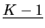
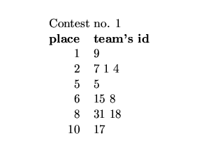
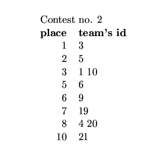
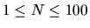

One of the participants of both regional contests which took place in St. Petersburg decided
to determine overall rating for all
teams that took part in at least one contest.
This participant assigned each team a unique team identifier, which was an integer
from 1 to 100 inclusively. For each contest
team identifiers of the participating teams were written in a column according to their
place in that contest. Identifiers of the
teams that had equal results were written on the same line. The participant started with
the team(s) that was(were) the best in
that contest (writing them on the first line) and continued in the order of decreasing results.
Definition: Let's say that the team has place K in the
contest if exactly

teams performed in that contest better.
Consider the following examples of two contests' results:


The overall rating for the teams which took part in both contests is defined in the following way:
- 1)
- If some team performed better in both contests than some other team
(or better in one contest and with the same result in the other contest) then
the overall rating of the former team is higher than the rating of the latter
team.
- 2)
- If one of the teams in question performed better in one contest and
the other team performed better in another contest then their overall rating
depends on the difference of their places in both contests. So, in our
example team 1 is better than team 5 in the first contest with a difference of
3 places and worse in the second contest with a difference of only 1
place, therefore the overall rating of team 1 is higher than team 5's
one. If the difference of the places is the same for both contests then
that teams have the equal overall ratings. The latter is also true for the
teams that performed equally in both contests.
In our example only teams 1, 4,
5, and 9 participated twice. Team 1 has the highest rating, teams 5 and 9 with
the equal rating follow, and team 4 has the lowest rating.
For the teams that
participated in one contest only the overall rating and their position in the
resulting list cannot be always determined. They are included in the overall
list (where the teams which participated twice already placed according to the
rules above) if one of the following takes place:
- A)
- If there is a team that
participated in both contests and shared the place in one of the contests with
the team in question then the latter team shares the overall rating with this
team too (if there is more than one such team, then they all should have the
same overall rating, otherwise the overall rating of the team in question
cannot be determined).
- B)
- If there is a position in the overall list (either
at the beginning of the list, at the end of the list, or between some lines),
such that before this position only the teams are located which performed
better in the same contest as the team in question and after this position
only the teams are located which performed worse in the same contest as the
team in question, then the team in question occupies this position in the
overall list. If more than one team claim to have the same position in the
overall list, then their mutual order is defined by their places in their
contests (look at the example below for details). �
In our example:
| Teams that
participated in both contests |
Teams that participated in one contest only |
| |
3 |
| 1 |
10 |
| 9 5 |
|
| |
19 |
| 4 |
20 |
| |
15 8 |
| |
31 18 |
| |
17 21 |
- Team 3 will occupy the first
place in the overall list (rule B).
- The positions of teams 6 and 7 cannot be
determined.
- Team 10 will share the overall rating with team 1 (rule A).
- Team 20 will share the overall rating with team 4 (rule A).
- Team 19 will
occupy the position between teams 9, 5 and team 4 (rule B).
- Teams 8, 15, 17,
18, 21, and 31 will finish the overall list (rule B). But the first of them
will be teams 15 and 8 (that took 6th place) followed by teams 31 and 18
(that took 8th place) and teams 17 and 21 (that took 10th place).
Your task is to write a program that will create the overall rating list using
the result tables of two contests and the given rules.
The first line of the input is an integer M, then a blank line followed by M datasets. There is a blank line between datasets.
Each dataset contains a description of the two contests, which are separated by an empty line. Each description starts with a
line containing the single integer N (
)
that
indicates how many lines of the contest result table follow. Each line of the
contest result table consists of one or more team identifiers separated by
spaces.
Every team identifier occurs at most once in the description of each
contest.
For each dataset, write one or more lines with the team identifiers (separated by spaces) that represent the overall rating list.
The order of the teams that share the same rating (thus written on the same line) is unimportant. The teams for which the
overall rating is not determined should be absent in the output file.
Print a blank line between datasets.
1
6
9
7 1 4
5
15 8
31 18
17
8
3
5
1 10
6
9
19
4 20
21
3
1 10
5 9
19
4 20
15 8
31 18
17 21
Miguel Revilla
2000-05-22